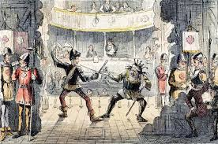

| Cartoon |
Drama

- Дра́ма (др.-греч. δρᾶμα «деяние, действие») — литературный (драматический) и сценический жанр. Получил особое распространение в литературе XVIII−XXI веков, постепенно вытеснив другой жанр драматургии — трагедию[1], противопоставив ему преимущественно бытовой сюжет и более приближенный к обыденной реальности стиль[2].
- В отличие от лирики и подобно эпосу, драма воспроизводит прежде всего внешний мир — взаимоотношения между людьми, их поступки, возникающие конфликты.
- В отличие от эпоса, она имеет не повествовательную, а диалогическую форму.
|